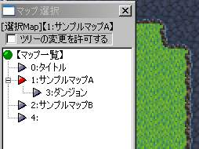
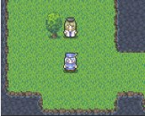
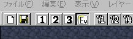
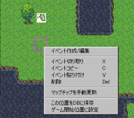
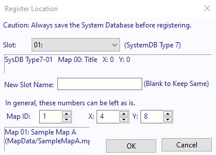

Open the Map Selection window
"1: Sample Map A".

[Learn How To]
Change the game's starting position so the player appears
in front of the Professor on "Sample Map A".
In the Sample Game, the player starts from the Title map.
This tutorial shows how to change the starting location.

| [1] Open the starting map Open the Map Selection window "1: Sample Map A". |
 |
| [2] Switch to Event Layer editing Click the "[Ev]" icon to switch to Event Layer editing. |
 |
| [3] Change the starting position Right-click the location where you want the game to start (in this example, the tile in front of the Professor). Select "Set as Game Start Position". |
 |
| [4] Play Test! Start a Test Play begin from the selected location. You've successfully changed the game's starting position! |
| [Extra Note] "Save position to Database" is different from "Set as Game Start Position". Instead of changing where a new game begins, it stores the selected map coordinates so they can be used later by events and location-transfer commands. If you click "Save Position to Database", a window titled "Register Location" will appear. Leaving the default settings and clicking "OK" will save that location for later use. |
 |
Written by SmokingWOLF ◆ English edition lovingly prepared by Anya & Lolo.
[If you don't see the navigation menu on the left, click here]